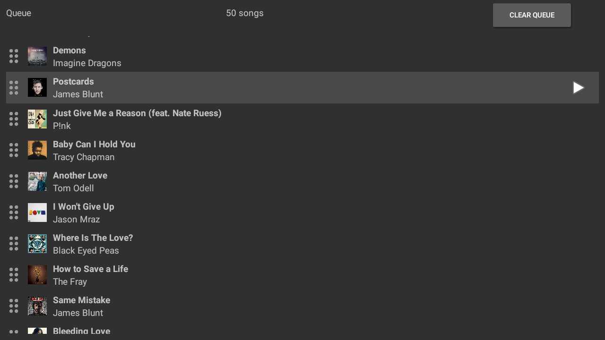
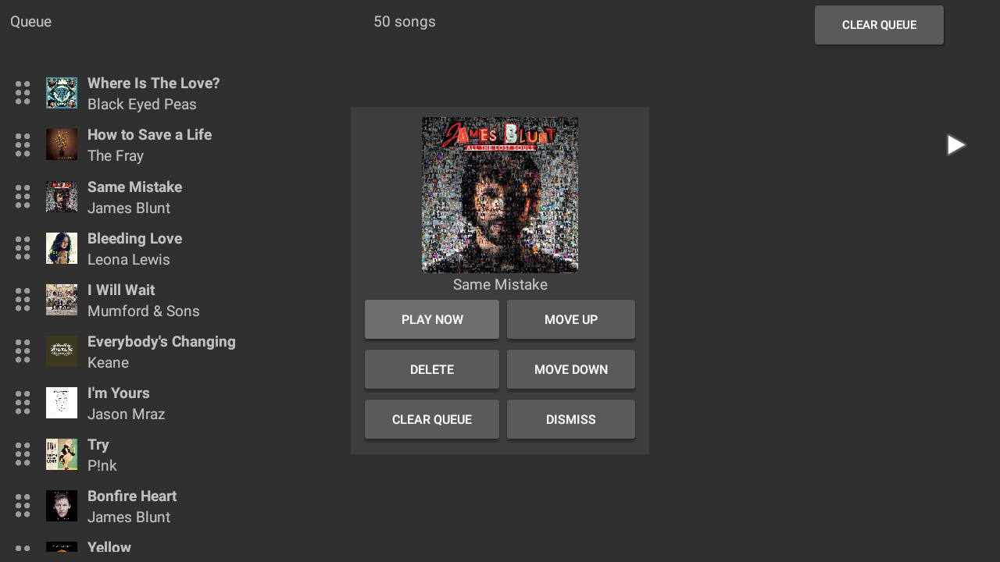
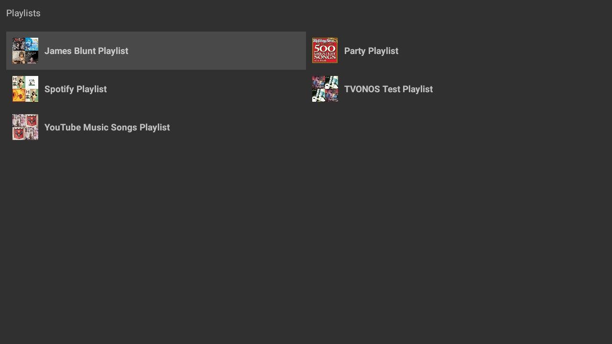
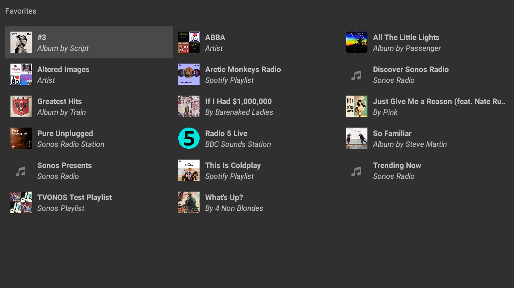
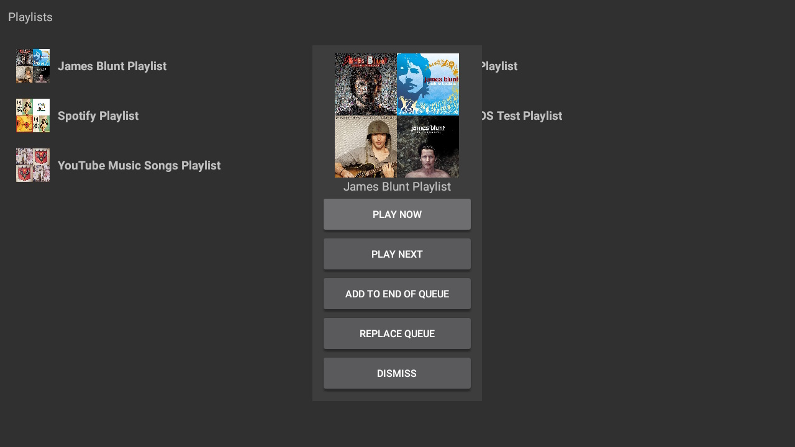

Queue, Playlists & Favorites
View, navigate and play from your queue, playlists or favorites.

Queue
The queue list displays the Sonos queue for the active Sonos speaker, the display of the queue can be altered in the settings to show more columns. (Album Art is only shown if provided by the Streaming service or embedded in the local library track)

Queue Selection
Selecting an item in the queue will display a dialog to allow management of that item with commands such as changing the order, removing or playing the track. This can be changed in the settings to play the track from the queue instead of showing the dialog.

Playlists
The playlists displays the Sonos playlists for the active Sonos speaker, the display of the playlists can be altered in the settings to show more or less columns. (Album Art is only shown if provided by the Streaming service or embedded in the local library track)

Favorites
The favorites displays the Sonos favorites for the active Sonos speaker, the display of the favorites can be altered in the settings to show more or less columns. (Album Art is only shown if provided by the Streaming service or embedded in the local library track)

Playlist/Favorites Selection
Selecting an item in the playlist or favorites will display a dialog to allow actions on that item with commands such as adding to the queue or playing immediately. This can be changed in the settings to not display the dialog and always perform a single action.